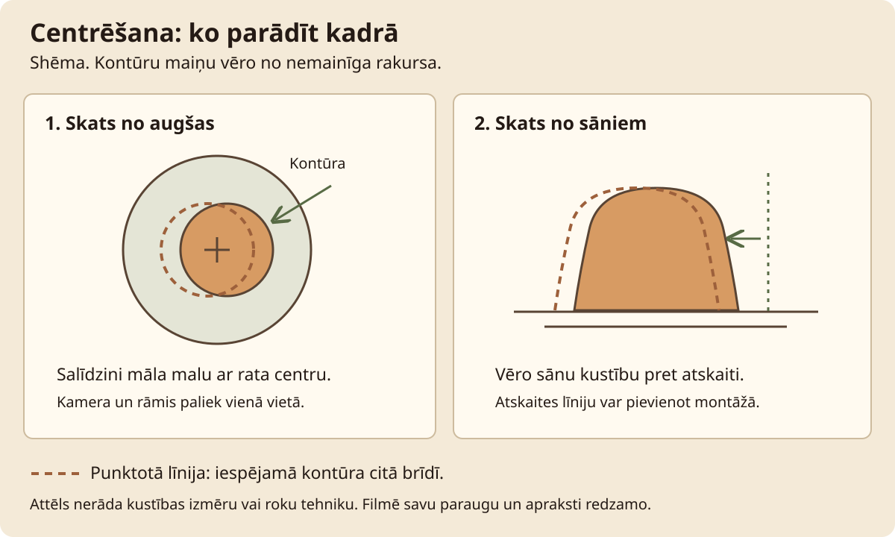

Virpošana · Stunda 2 no 6
Māla centrēšana uz virpas
Izmēģini viena neliela māla gabala centrēšanu un iemācies novērot sānu svārstību pirms formas atvēršanas.
Stundas rezultāts. Centrēšanas mēģinājums ar redzamu pārbaudi un trīs salīdzināmu mēģinājumu pieraksti.
Teksts un kadri sagatavoti izmēģinājumam. Norādītie laiki ir plānoti; darbnīcas izmēģinājums un video ieraksts vēl nav dokumentēti.
Pirms filmēšanas un prakses
Priekšzināšanas. Sagatavota virpa, apgūta vadība un sagatavots vienmērīgi mitrs māls.
Sagatavo trīs viena māla porcijas, piemēram, pa 400 g šim vingrinājumam. Masu pielāgo savām spējām. Mīcīšanu veic iepriekš un pieraksti sagatavošanas paņēmienu; gluda ārpuse neapliecina iekšējo ieslēgumu neesamību.
| Rīks vai materiāls | Kam tas vajadzīgs |
|---|---|
| Podnieka virpa | Centrēšanas demonstrācija. |
| Svari | Salīdzināmas porcijas. |
| Ūdens trauks | Nelielai roku mitrināšanai. |
| Sūklis | Liekā ūdens savākšanai. |
| Marķēts māla trauks | Atlikumu savākšanai atsevišķi no citiem māliem. |
| Paraugs | Sākuma stāvoklis | Izmantošana ainās |
|---|---|---|
| A | Sagatavota 400 g porcija | Galvenais mēģinājums. |
| B | Tā paša māla porcija | Atkārtojums tuvplānā. |
| C | Tā paša māla porcija | Patstāvīgs mēģinājums. |
Pārbaudi pirms ieraksta
- Sānskatā redzams roku atbalsts un māla ārējā mala.
- Tuvplānam sagatavots paraugs B; montāžā tas tiks nosaukts par atkārtojumu.
- Māla kodi un masas ierakstīti darba lapā.
- Ūdens pieejams, bet neatrodas pie elektriskajiem savienojumiem.
Drošība šajā stundā
Rotējošas ierīces tuvumā neturi brīvus matus, rotas un vaļīgu apģērbu. Nenovieto kameru vai rīkus uz ierīces kustīgajām daļām. Slapjas šļakatas savāc; uzkopšanu veic ar apturētu virpu.
Apstājies, ja: parādās asas sāpes, tirpšana, māls atdalās no ripas vai ierīce uzvedas neparasti. Apturi, novērtē iemeslu un nepalielini spēku, lai kompensētu grūtības.

Filmēšanas secība
Ainas un ieteicamais teksts
8 ainas · 4:00
Citāti ir pielāgojams pasniedzēja teksts. Pēc runas atstāj laiku darbības vērošanai. Ja kustība aizņem ilgāk, pagarini ainu un atjauno laika plānu.
-
1. Sānu svārstības salīdzinājums
0:00-0:20 · 20 sAinas kods: rata-02-a01
- Kadrējums
- Nemainīgs sānskats uz māla ārējo malu.
- Darbība
- Parādi parauga sākumu un vēlāk uzņemtu rezultātu. Abus kadrus marķē ar vienādu parauga kodu.
Ieteicamais runājamais teksts
Skaties uz māla ārējo malu. Sākumā tā kustas uz sāniem; beigās salīdzināsim, kas mainījies.
- Teksts ekrānā
- Vēro ārējo malu
- Pārbaudes kadrs
- Atšķirība redzama vienā un tajā pašā rakursā.
- Pauze un montāža
- Ievada rezultātu ievieto tikai pēc īstā mēģinājuma uzņemšanas.
-
2. Māls un atbalsts
0:20-0:45 · 25 sAinas kods: rata-02-a02
- Kadrējums
- Svari, etiķete, pēc tam sēdpozīcijas sānskats.
- Darbība
- Pieraksti masu. Pie apturētas virpas parādi, kur balstīsi elkoņus un kā aizsniegsi ūdeni.
Ieteicamais runājamais teksts
Šim mēģinājumam izmantoju pierakstīto māla daudzumu. Vispirms iekārtoju roku atbalstu.
- Teksts ekrānā
- Paraugs A; māls; masa
- Pārbaudes kadrs
- Kods sakrīt ar darba lapu.
- Pauze un montāža
- Pēc masas tuvplāna atgriezies pie fiksētā rakursa.
-
3. Nostiprināšana ripas vidū
0:45-1:10 · 25 sAinas kods: rata-02-a03
- Kadrējums
- Skats no augšas uz apturētu ripu.
- Darbība
- Novieto porciju ripas vidū un stingri piestiprini. Pārbaudi pamatnes kontaktu pirms ieslēgšanas. Iedarbini tikai tad, kad rokas un rīki ir sagatavoti.
Ieteicamais runājamais teksts
Mālu nostiprinu ripas vidū. Ja tas slīd, vispirms izlaboju piestiprinājumu.
- Teksts ekrānā
- Vispirms nostiprini
- Pārbaudes kadrs
- Porcija neslīd pa ripu.
- Pauze un montāža
- Neslēp sagatavošanu aiz lēciena uz jau centrētu paraugu.
-
4. Viens pilns centrēšanas mēģinājums
1:10-2:05 · 55 sAinas kods: rata-02-a04
- Kadrējums
- Sānskats; redzamas abas plaukstas un atbalsts.
- Darbība
- Mitrini rokas un izvēlies kontrolējamu rotāciju. Ar stabilu plaukstu sānos un otru augšpusē pakāpeniski virzi mālu uz rotācijas asi. Spiedienu pievieno un atlaiž pakāpeniski.
Ieteicamais runājamais teksts
Rokas balstu stabili un spiedienu mainu pakāpeniski. Vēro, kā mainās māla mala attiecībā pret roku.
- Teksts ekrānā
- Vienmērīgs atbalsts un pakāpenisks spiediens
- Pārbaudes kadrs
- Parauga kontūra paliek redzama visā kustībā.
- Pauze un montāža
- Pēc citāta klusē un parādi kustību bez pārrāvuma; vajadzības gadījumā pagarini ainu.
-
5. Atkārtojums tuvplānā
2:05-2:40 · 35 sAinas kods: rata-02-a05
- Kadrējums
- Cits paraugs B, rokas no tās pašas darba puses.
- Darbība
- Atkārto kustību ar svaigu porciju. Ja izmanto konusēšanu, parādi celšanu un nospiešanu vienā secībā, nosaucot to par izvēlēto paņēmienu.
Ieteicamais runājamais teksts
Šis ir atkārtojums ar paraugu B. Tuvplānā redzams plaukstu kontakts, kuru iepriekš aizsedza sānskats.
- Teksts ekrānā
- Atkārtojums: paraugs B
- Pārbaudes kadrs
- Redzama roku kontakta vieta.
- Pauze un montāža
- Parauga maiņu parādi ar etiķeti, nemontē kā nepārtrauktu A procesu.
-
6. Pārbaude pirms atvēršanas
2:40-3:15 · 35 sAinas kods: rata-02-a06
- Kadrējums
- Atgriezies sākuma sānskatā.
- Darbība
- Samazini spiedienu, saglabā vieglu pieskārienu un vēro periodisku sānu kustību. Ja tā saglabājas, fiksē novērojumu un neatver paraugu tikai video noslēguma dēļ.
Ieteicamais runājamais teksts
Vai mala vēl periodiski spiežas pret roku? Pierakstu novērojumu pirms nākamā soļa.
- Teksts ekrānā
- Vai sānu svārstība saglabājas?
- Pārbaudes kadrs
- Salīdzinājums nav aizsegts ar pirkstiem vai ekrāna tekstu.
- Pauze un montāža
- Atstāj vairākus pilnus apgriezienus bez runas.
-
7. Mēģinājumu salīdzināšana
3:15-3:40 · 25 sAinas kods: rata-02-a07
- Kadrējums
- A un B foto, darba lapa; virpa apturēta.
- Darbība
- Pieraksti novēroto un izvēlies vienu izmaiņu paraugam C, piemēram, mazāku porciju vai citu sēdvietas augstumu.
Ieteicamais runājamais teksts
Nākamajā mēģinājumā mainīšu vienu lietu. Tas palīdzēs salīdzināt, kas manā darbā ir mainījies.
- Teksts ekrānā
- Viena izmaiņa nākamajam mēģinājumam
- Pārbaudes kadrs
- Darba lapā ierakstīta konkrēta izmaiņa.
- Pauze un montāža
- Šeit var izmantot aizkadra balsi.
-
8. Uzdevums un turpinājums
3:40-4:00 · 20 sAinas kods: rata-02-a08
- Kadrējums
- Darba lapa un sakārtota virpa.
- Darbība
- Nosauc trīs mēģinājumu uzdevumu, parādi atlikumu trauku un saiti uz atvēršanu.
Ieteicamais runājamais teksts
Izmēģini trīs porcijas un saglabā novērojumus. Pie atvēršanas pārej, kad centrējums ir pārbaudīts.
- Teksts ekrānā
- Tālāk: atvēršana un pamatne
- Pārbaudes kadrs
- Nosaukts pārbaudāmais rezultāts, ne garantēts mēģinājumu skaits.
- Pauze un montāža
- Gala kadru pieturi lasīšanai.
Ainu atzīmes saglabājas šajā pārlūkā, ja pieejama lokālā glabāšana. Tās atzīmē ieraksta progresu, nevis tehniskās drošības pārbaudi.
Prakse darbnīcā
Pamatuzdevums. Centrēšanas mēģinājums ar redzamu pārbaudi un trīs salīdzināmu mēģinājumu pieraksti.
| Darba posms | Plānotais laiks |
|---|---|
| Darba vietas un porciju sagatavošana | 10 min |
| Trīs centrēšanas mēģinājumi ar pauzēm | 30 min |
| Novērojumu salīdzināšana | 5 min |
| Mitrā uzkopšana | 10 min |
| Žurnāla ieraksts | 5 min |
| Kopā | 60 min |
Filmēšana. Plāno atsevišķu 60-90 minūšu ieraksta sesiju ar sagatavotiem paraugiem. Faktisko laiku pieraksti pēc izmēģinājuma.
Gaidīšana. Žūšana nav vajadzīga. Pārmitru vai nogurdinoši cietu porciju nomaini, nākamo mēģinājumu veic ar sagatavotu mālu.
Ja paliek laiks. Salīdzini divu porciju centrējumu vienā kameras rakursā, nemainot vairākus apstākļus reizē.
Ja jāpārtrauc. Apturi virpu, savāc mālu marķētā traukā, notīri mitri un saglabā jau novēroto.
Ko darīt, ja neizdodas
| Novērotā pazīme | Iespējamais iemesls | Nākamā darbība |
|---|---|---|
| Māls periodiski kustina rokas | Nestabils atbalsts vai nevienmērīgs spiediens | Apturi un pārbaudi sēdpozīciju; nākamajā mēģinājumā maini vienu atbalsta punktu. |
| Māls kļūst pārāk mīksts | Ilgs mēģinājums un daudz ūdens | Savāc porciju pārstrādei un atkārto ar sagatavotu mālu. |
| Māls slīd pa ripu | Nepietiekams kontakts ar pamatni | Apturi virpu un no jauna sagatavo piestiprinājumu. |
Drukājama darba lapa · Virpošana 02
Māla centrēšana uz virpas: pieraksti
Datums: ____________________ Darba / māla kods: ____________________
Mērķis. Centrēšanas mēģinājums ar redzamu pārbaudi un trīs salīdzināmu mēģinājumu pieraksti.
Pirms uzdevuma. Rotējošas ierīces tuvumā neturi brīvus matus, rotas un vaļīgu apģērbu. Nenovieto kameru vai rīkus uz ierīces kustīgajām daļām. Slapjas šļakatas savāc; uzkopšanu veic ar apturētu virpu.
| Mēģinājums / pārbaude | Sākuma apstākļi | Redzamais rezultāts | Nākamā izmaiņa |
|---|---|---|---|
| A | |||
| B | |||
| C |
Ko pierakstīt darbnīcas žurnālā
- Māla kods, katras porcijas masa un sagatavošanas metode.
- Cik ilgi strādāji līdz pirmajai pārbaudei.
- Vai sānu svārstība bija redzama un kurā rakursā.
- Kādu vienu izmaiņu veici starp mēģinājumiem.
Viena nākamā izmaiņa:
Faktiskais darba laiks un pieredzes līmenis:
Pārbaudītais rezultāts un neatbildētie jautājumi:
Palīgmateriāli šai stundai

Izmēģinājuma un montāžas pieraksts
Scenārija redakcija: Praktiskais izmēģinājums: vēl nav dokumentēts. Aizpildi tabulu pēc faktiskā mēģinājuma un labo ainu laikus.
| Ainas kods / dublis | Izmantojamais fragments | Kas jāprecizē |
|---|---|---|
| rata-02-a___ | ________________ | ________________ |
| rata-02-a___ | ________________ | ________________ |